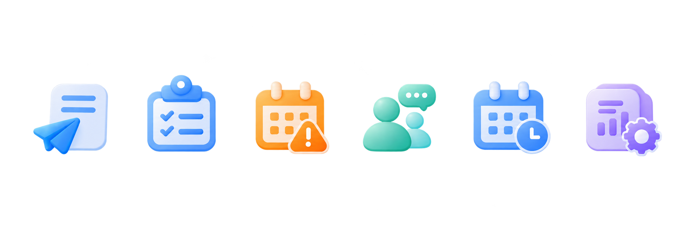

任务与访视概览
查看当前研究项目的任务和近期访视
全部项目
HER2 阳性晚期乳腺癌真实世界研究
非小细胞肺癌 II 期研究
乳腺癌 III 期临床研究
消化道肿瘤 III 期研究
×
全部中心
第一医院
第二医院
×
×
重置

待访视预约
0
待跟进参与者
4
待数据录入
4
待发放访视任务
7
待处理访视任务
6
逾期待处理访视任务
1
待发放（7）
已发放（5）
无需处理（5）
已完成（0）
无需处理（0）
全部
今日
逾期
参与者
任务名称
参与试验
访视
计划日期/访视窗口
操作
今日待办
聚焦今日工作，请优先处理～
0
项待处理
今日访视
任务待处理
待跟进
访视未预约
重点关注
全部访视
›
发放任务
已入组
×
1
任务信息
任务名称
访视
采集方式
填写方式
任务说明
2
采集配置
配置来源：任务模板
采集周期
时间基准
采集安排
时间窗口
逾期执行
自动映射CRF
3
基准日期及生成结果
访视日期（基准日期）
修改后，系统将立即重新计算下方尚未执行的任务。
调整原因
执行任务
计划日期
采集时间
允许执行窗口
状态
调整预览
执行任务
调整前
调整后
查看任务
×
无需处理
×
无需处理原因
*
0
/200
添加跟进
×
跟进日期
*
跟进内容
*
0
/500